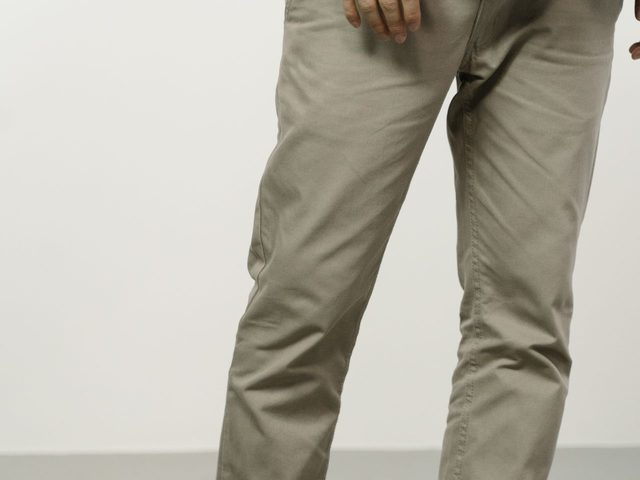
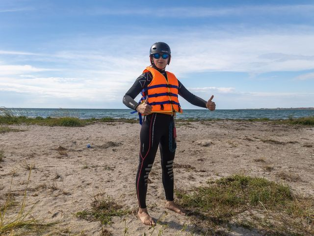
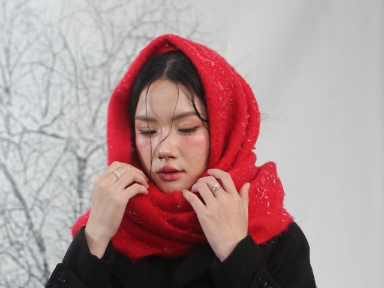
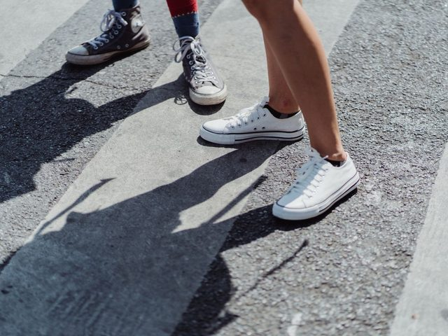

UNIT 12 · VOCABULARY
衣服和裝飾品
Clothing & accessories
23 個單字聽・唸・用
本單元單字一覽
衣服、配件和材質，共 23 個。成雙成對的東西（trousers、slippers、sneakers、pajamas）要用 a pair of。
blousepajamasraincoatsuitswimsuittrousersunderwearvestcontact lensearringshandkerchiefnecklacepursescarfslipperssneakersholespotcottondiamondgoldsilveriron
每個字都有 🔊，先聽發音、跟著唸，再看例句。
單字 1–4

blouse
女用襯衫n.
She wore a white blouse and a blue skirt.
她穿白色襯衫配藍色裙子。
她穿白色襯衫配藍色裙子。

pajamas
睡衣（褲）n.
I put on my pajamas and went to bed.
我換上睡衣去睡覺。
我換上睡衣去睡覺。

raincoat
雨衣n.
Wear a raincoat when you ride a scooter in the rain.
下雨騎機車要穿雨衣。
下雨騎機車要穿雨衣。

suit
套裝；西裝n.
Dad wears a suit and tie to work.
爸爸穿西裝打領帶去上班。
爸爸穿西裝打領帶去上班。
單字 5–8
🩱
swimsuit
泳衣n.
Don't forget your swimsuit for the beach trip.
去海邊別忘了帶泳衣。
去海邊別忘了帶泳衣。

trousers
長褲n.
These trousers are too long for me.
這條長褲對我來說太長了。
這條長褲對我來說太長了。
🩲
underwear
內衣褲n.
Pack enough underwear for the five-day trip.
五天的旅行要帶夠內衣褲。
五天的旅行要帶夠內衣褲。

vest
背心n.
Everyone on the boat must wear a life vest.
船上每個人都要穿救生衣。
船上每個人都要穿救生衣。
單字 9–12

contact lens
隱形眼鏡n.
I wear contact lenses when I play basketball.
我打籃球時戴隱形眼鏡。
我打籃球時戴隱形眼鏡。

earrings
耳環n.
Mom got a pair of pearl earrings for her birthday.
媽媽生日收到一對珍珠耳環。
媽媽生日收到一對珍珠耳環。
🤧
handkerchief
手帕n.
Grandpa always carries a handkerchief in his pocket.
爺爺口袋裡總是帶著手帕。
爺爺口袋裡總是帶著手帕。

necklace
項鍊n.
She wears a gold necklace.
她戴著一條金項鍊。
她戴著一條金項鍊。
單字 13–16

purse
錢包；（女用）手提包n.
Mom took some money out of her purse.
媽媽從錢包裡拿出一些錢。
媽媽從錢包裡拿出一些錢。

scarf
圍巾；絲巾n.
Wear a scarf. It's cold outside.
戴條圍巾，外面很冷。
戴條圍巾，外面很冷。

slippers
拖鞋n.
Please put on slippers when you come in.
進來時請換拖鞋。
進來時請換拖鞋。

sneakers
運動鞋n.
I need new sneakers for P.E. class.
我體育課需要新的運動鞋。
我體育課需要新的運動鞋。
單字 17–20
🕳️
hole
洞n.
There is a hole in my sock.
我的襪子破了一個洞。
我的襪子破了一個洞。
🔴
spot
斑點；汙漬；地點n.
There's a coffee spot on your shirt.
你的襯衫上有一塊咖啡漬。
你的襯衫上有一塊咖啡漬。

cotton
棉；棉花n.
This T-shirt is made of cotton.
這件 T 恤是棉做的。
這件 T 恤是棉做的。

diamond
鑽石n.
Diamonds are very hard and expensive.
鑽石又硬又貴。
鑽石又硬又貴。
單字 21–23
gold
金；黃金n.
The winner got a medal made of gold.
冠軍拿到一面金做的獎牌。
冠軍拿到一面金做的獎牌。

silver
銀色的；銀adj. / n.
She won a silver medal in the race.
她在比賽中得到銀牌。
她在比賽中得到銀牌。

iron
鐵；熨斗；燙衣服n. / v.
Mom irons Dad's shirts every Sunday.
媽媽每個星期天幫爸爸燙襯衫。
媽媽每個星期天幫爸爸燙襯衫。
一雙、一條：a pair of
| 東西 | 說法 |
|---|---|
| 長褲 | a pair of trousers |
| 拖鞋 | a pair of slippers |
| 運動鞋 | a pair of sneakers |
| 睡衣 | a pair of pajamas |
| 耳環 | a pair of earrings |
兩件一組的東西用複數，數的時候說 a pair of、two pairs of。
金、銀、鐵
| 名詞 | 形容詞 |
|---|---|
| gold 金 | golden 金色的 |
| silver 銀 | silver 銀色的 |
| iron 鐵 | iron 鐵的 |
gold、silver、iron 當材料時不可數。
快問快答：中文 → 英文
1女用襯衫blouse
2睡衣（褲）pajamas
3雨衣raincoat
4套裝；西裝suit
5泳衣swimsuit
6長褲trousers
7內衣褲underwear
8背心vest
快問快答：英文 → 中文
1contact lens隱形眼鏡
2earrings耳環
3handkerchief手帕
4necklace項鍊
5purse錢包；（女用）手提包
6scarf圍巾；絲巾
7slippers拖鞋
8sneakers運動鞋
學完了！接下來
複習方法
review
- 回到「📗 單字卡」，按「遮中文」自己考自己
- 再按「遮英文」，看中文說出英文
- 每個例句跟著 🔊 唸一次
準備好了
- 按右上角「📝 前往測驗」
- 測驗錯的題目要訂正到全對
- 訂正完成補送 1 點